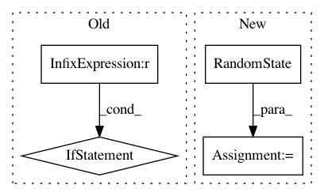

ef498e8aa5cdfe09247d9c9efc7ef636378165c2,python/ray/serve/policy.py,PowerOfTwoPolicy,flush,#PowerOfTwoPolicy#Any#Any#,102
Before Change
assigned_backends = set()
while endpoint_queue.qsize():
if len(self.backend_names) >= 2:
backend1, backend2 = np.random.choice(
self.backend_names,
2,
replace=False,
p=self.backend_weights)
// Choose the backend that has a shorter queue.
if (len(backend_queues[backend1]) <= len(
backend_queues[backend2])):
chosen_backend = backend1
else:
chosen_backend = backend2
else:
chosen_backend = np.random.choice(
self.backend_names, replace=False,
p=self.backend_weights).squeeze()
backend_queues[chosen_backend].add(await endpoint_queue.get())
assigned_backends.add(chosen_backend)
return assigned_backends
After Change
else:
sha256_seed = sha256(query.shard_key.encode("utf-8"))
seed = np.frombuffer(sha256_seed.digest(), dtype=np.uint32)
rstate = np.random.RandomState(seed)
chosen_backend = rstate.choice(
self.backend_names, replace=False,
p=self.backend_weights).squeeze()
In pattern: SUPERPATTERN
Frequency: 3
Non-data size: 4
Instances
Project Name: ray-project/ray
Commit Name: ef498e8aa5cdfe09247d9c9efc7ef636378165c2
Time: 2020-05-15
Author: ed.nmi.oakes@gmail.com
File Name: python/ray/serve/policy.py
Class Name: PowerOfTwoPolicy
Method Name: flush
Project Name: GPflow/GPflow
Commit Name: 828694a2ba7e67a5e2a2c32803e50f26ed8241e9
Time: 2019-09-11
Author: sergio.diaz@prowler.io
File Name: _unsorted/_test_method_equivalence.py
Class Name:
Method Name:
Project Name: GPflow/GPflow
Commit Name: 3b5c8c77c46e4397d75544af5372044777170c0b
Time: 2019-09-10
Author: sergio.diaz@prowler.io
File Name: _unsorted/_test_coregion.py
Class Name:
Method Name: